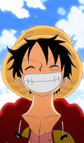
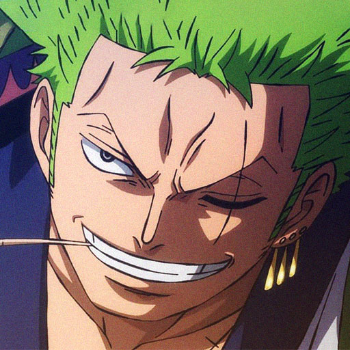
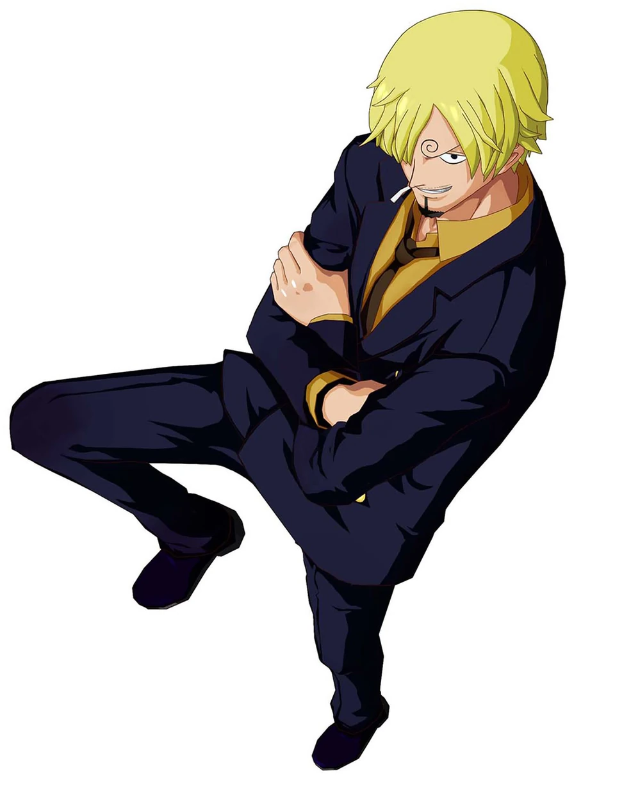
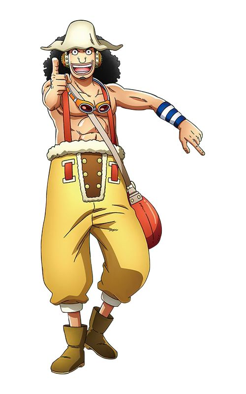
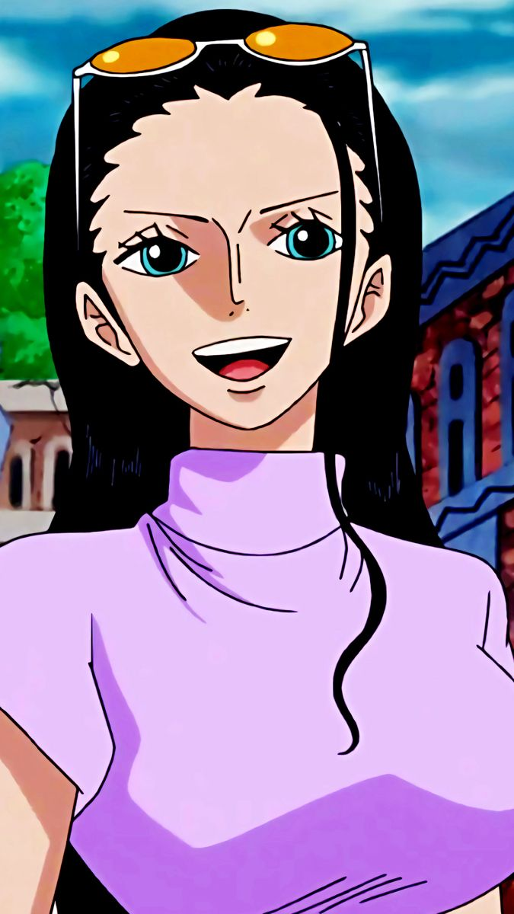
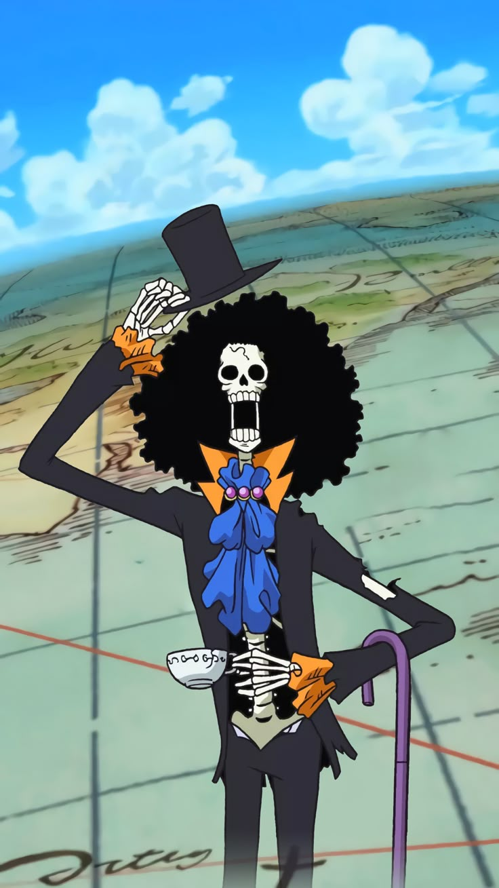
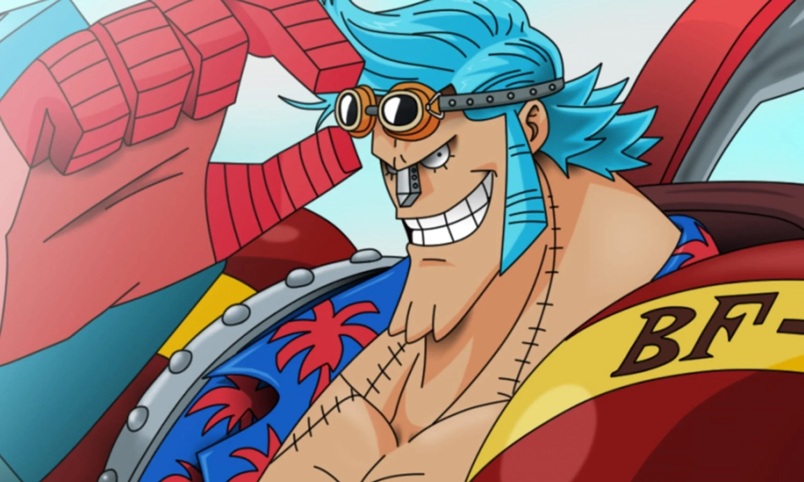
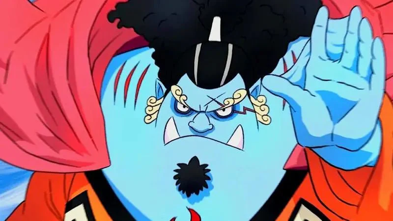

Líder do bando, usuário de Akuma no Mi e portador do Haki do Conquistador. Busca a liberdade absoluta nos mares.

Mestre no estilo de três espadas (Santoryu). Primeiro aliado de Luffy, focado em se tornar o maior do mundo.

Cartógrafa genial capaz de prever o clima com precisão absoluta. Seu sonho é desenhar o mapa-mundi completo.

Mestre da culinária marítima e lutador marcial que utiliza apenas as pernas. Procura pelo lendário mar All Blue.

Especialista em disparos de longa distância e engenharia tática rudimentar. Almeja ser um bravo guerreiro.

Rena que consumiu a Hito Hito no Mi. Cientista médico formidável que busca a cura para todas as doenças.

Única sobrevivente de Ohara capaz de ler os Poneglyphs. Estuda a história oculta do Século Perdido.

Esqueleto vivo ressuscitado pela Yomi Yomi no Mi. Esgrimista ágil que utiliza técnicas musicais hipnóticas.

Cyborg construtor de navios. Criador do Thousand Sunny, viaja para garantir que o navio cruze o fim do mundo.

Mestre do Karatê Homem-Peixe e timoneiro formidável. Conduz o navio com maestria pelas violentas correntes.